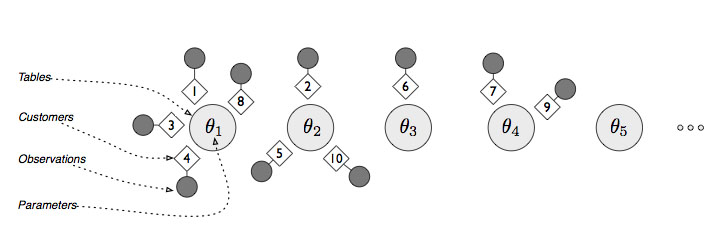
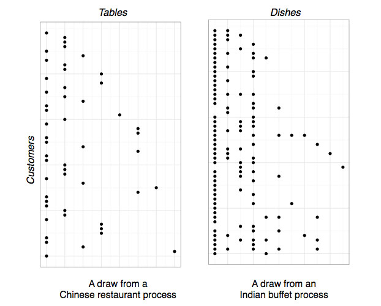

What is Statistics?
- Statistics is a mathematical theory that tells us how we should learn about the structure of the world around us based on our experiences
- Statistical theory decides which methods are good and which are bad by inventing a theoretical world in which we can precisely measure how well we are learning from our experiences
- The practical value of statistical theory depends upon the match between the structure of this theoretical world and the real world
- But we need powerful models if we want to describe the complex structures that actually occur in the real world
What is Nonparametric Statistics?
- Nonparametric statistical models try to pull out the structure of the world from data, rather than push the structure of our theories onto data
- Nonparametric statistical models "let the data speak" by employing highly flexible functional forms
- Nonparametric statistical models typically have infinitely many parameters
- But only a finite number of parameters are used when analyzing any specific data set
Nonparametric Density Estimation
- Many data sets don't look like out-of-the-box statistical distributions:
Nonparametric Density Estimation
- We want to estimate the true distribution of runners' times from this bimodal sample of data
- We have two standard nonparametric density estimation tools:
- Histograms
- Kernel Density Estimators (KDE's)
Histograms are a Nonparametric Method
- If you have infinite data, a histogram will converge on the true distribution
SHOW SAMPLES OF SIZE 100, 1000, 10000
KDE's are a Nonparametric Method
- If you have infinite data, a KDE will converge on the true distribution
SHOW SAMPLES OF SIZE 100, 1000, 10000
KDE's > Histograms
- KDE's converge on the true distribution faster than histograms
SHOW CONVERGENCE RATES
Nonparametric Regression
- Many data sets have relationships between variables that don't look like straight lines
- We need regression models that are more expressive than linear regression
Nonparametric Regression
- We have several standard nonparametric regression tools:
- Loess
- Generalized Additive Models (GAM's)
- k-Nearest Neighbors Regression (kNN)
Loess is a Nonparametric Method
- If you have infinite data, loess may converge on the true distribution
What is Bayesian Statistics?
- Bayesian statistical models are enriched by prior knowledge
- Prior knowledge can be viewed as regularization
- Knowledge gained from experience is quantified using probability theory:
- Inferences are distributions, not point estimates or interval estimates
Why Use Bayesian Statistics?
- Three points in its favor:
- Universally applicable
- Often more effective than maximum likelihood methods
- Increasingly easy to apply to arbitrary problems in data analysis
Why Not Use Bayesian Statistics?
- Four points against it:
- Can still be hard to apply to some problems
- Requires greater grasp of statistical theory to apply to new problems
- Rarely implemented in out-of-the-box software
- Inaccurate prior knowledge can produce worse inferences than starting from scratch
What is Bayesian Nonparametrics?
- We want to use prior knowledge while estimating flexible functional forms
- Like frequentist methods, standard Bayesian models are parametric
- Bayesian nonparametrics exploit a family of flexible distributions that encode prior knowledge
- Typically that prior knowledge reflects Occam's Razor
What is Bayesian Nonparametrics?
- Many statistical models require the a priori selection of integer parameters:
- k: Number of clusters in k-means
- k: Number of factors in factor analysis
- h: Bandwidth of kernel density estimator
- Bayesian nonparametric methods provide methods that use priors to infer these numbers from data
- Prior information is still required, but data can influence the results -- unlike hardcoded parameters in traditional models
Core Tools in Bayesian Nonparametrics
- Dirichlet Process
- Distribution over distributions
- Chinese Restaurant Process
- Distribution over category assignment
- Indian Buffet Process
- Distribution over active factors
Chinese Restaurant Process

Indian Buffet Process

CRP vs. IBP Draws

Three Examples of Bayesian Nonparametrics
- dp-Means: An easily implemented and fully automatic infinite cluster mixture model that borrows ideas from Bayesian nonparametrics
- crp-MM: An infinite cluster Gaussian Mixture model using a Dirichlet Process prior
- ibp-FA: An infinite dimensional factor analysis model using an Indian Buffet Process prior
dp-Means
- The dp-Means algorithm is an analogue to k-means
- It always converges and always reaches the same solution
- It has one parameter: \(\lambda\)
- If a point is further from the current clusters by more than \(\lambda\), it gets its own cluster
library("ggplot2")
source("dp-means.R")
data <- generate.data()
ggplot(data, aes(x = x, y = y, color = assignment)) +
geom_point()
dp.results <- dp.means(data, 30)
ggplot(data, aes(x = x, y = y, color = dp.results$assignments)) +
geom_point()
dp-Means
- dp-Means is as useful as k-means, but it is not a proper Bayesian method
- It cannot be used for online inference
- It cannot measure the uncertainty in its parameters
The Near Future
- Variational inference
- Stochastic variational inference
- Applying Bayesian nonparameters to huge, streaming data sets
References
- Gershman and Blei
- dp-Means ArXiv Paper
- Chinese Restaurant Process
- Indian Buffet Process
- Stochastic Variational Inference
- Teh Tutorial
- Gharahmani Tutorial
- Blei Course Notes